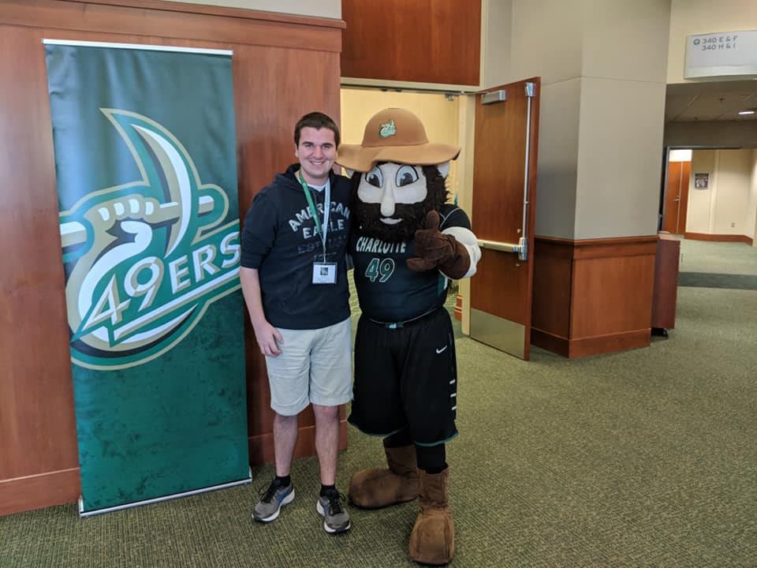

Ben Molk | ITIS 3135 | Bronze Mammoth Introduction
Ben Molk | ITIS 3135 | Bronze Mammoth
Ben Molk Introduction

Personal Background: Hi my name is Ben Molk, but I mostly go by Ben. I was born in
Indianapolis, Indiana, and lived there for 11 years before moving to Garner, North Carolina.
Academic Background: This is my fourth year at Charlotte but only my second year in Computer
Science. I started out majoring in Computer Engineering but after 2 years in the major determined
that it was not for me. I'm still a little unsure of what my plans are for the rest of my time here
but for now, I am content with where I am.
Background in this Subject: I developed an interest in code while taking a C++ class in my
freshman year. When I decided I wanted to change my major, Computer Science seemed like a good
option to further explore and learn programming.
Courses:
ITIS-3135 Web App Design and Development: Working towards a degree in Computer Science
with a concentration in Software Engineering
ITSC-3155 Software Engineering: Working towards a degree in Computer Science with a
concentration in Software Engineering
ITSC-3181 Introduction to Computer Architecture: Working towards a degree in Computer
Science with a concentration in Software Engineering